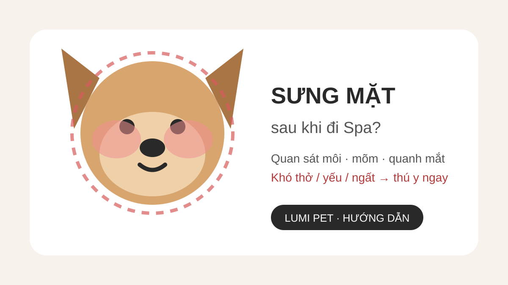

Chó sưng mặt sau khi đi Spa: khi nào cần đi thú y?
Trả lời nhanh: nếu chó xuất hiện sưng môi, mõm hoặc quanh mắt sau khi đi Spa, đừng mặc định đó chỉ là kích ứng nhẹ hay khẳng định Spa là nguyên nhân. Sưng mặt có thể gặp trong phản ứng dị ứng và có khả năng tiến triển. Hãy chụp ảnh, ghi thời điểm bắt đầu và liên hệ bác sĩ thú y để được hướng dẫn. Nếu bé khó thở, thở gắng sức, lưỡi/nướu đổi màu, yếu, loạng choạng, ngất, nôn hoặc tiêu chảy dữ dội, cần đưa đi cấp cứu thú y ngay.

Sưng mặt ở chó trông như thế nào?
Chủ nuôi thường nhận ra khi hai bên mõm không còn cân đối, môi dày lên, vùng quanh mắt phồng, mí mắt nặng hoặc mặt trông “tròn” hơn bình thường. Mề đay có thể xuất hiện như các nốt hoặc mảng gồ trên da, đôi khi khiến lông dựng lên.
VCA và Merck Veterinary Manual đều mô tả sưng vùng mặt, đặc biệt môi, mõm và quanh mắt, là biểu hiện có thể gặp trong phản ứng dị ứng. Tuy nhiên, chỉ dựa vào thời điểm sau grooming không thể xác định chính xác tác nhân. Côn trùng đốt, thức ăn, thuốc, hóa chất, sản phẩm tiếp xúc hoặc một vấn đề không liên quan tới Spa đều có thể nằm trong chẩn đoán phân biệt.
Vì sao chó có thể sưng mặt sau khi đi Spa?
1. Phản ứng dị ứng hoặc mề đay
Phản ứng quá mẫn có thể gây mề đay và sưng mặt. Merck ghi nhận shampoo là một trong các tác nhân có thể liên quan tới mề đay ở chó, nhưng đó không phải nguyên nhân duy nhất. Vì vậy, nếu triệu chứng xảy ra sau Spa, hãy ghi lại tất cả yếu tố mới trong ngày thay vì kết luận ngay một sản phẩm cụ thể.
2. Côn trùng đốt hoặc tiếp xúc môi trường
Sưng mặt cũng có thể xảy ra sau ong hoặc côn trùng đốt. Nếu chó vừa ở ngoài trời, đi dạo hoặc có biểu hiện cào mặt đột ngột, đây là thông tin đáng báo cho bác sĩ thú y.
3. Kích ứng tiếp xúc
Một số chó có thể nhạy với chất tiếp xúc. VCA lưu ý dị ứng tiếp xúc có thể liên quan vật liệu, hóa chất, shampoo hoặc chất tẩy rửa. Kích ứng da đơn thuần thường khác với sưng mặt tiến triển, vì vậy không nên tự gộp hai tình trạng thành một.
4. Nguyên nhân khác cần bác sĩ loại trừ
Vấn đề răng miệng, chấn thương, viêm hoặc các bệnh lý khác cũng có thể làm một vùng mặt sưng. Sưng một bên kéo dài, đau khi chạm, bỏ ăn hoặc tái diễn là lý do cần khám thay vì chỉ theo dõi như một phản ứng sau tắm.
5 việc nên làm ngay khi phát hiện chó sưng mặt
1. Quan sát đường thở trước tiên
Nhìn cách bé thở, màu nướu/lưỡi, mức tỉnh táo và khả năng đứng đi. Nếu có khó thở hoặc suy yếu, chuyển ngay sang bước cấp cứu thay vì mất thời gian tìm nguyên nhân.
2. Chụp ảnh và ghi thời gian
Chụp chính diện và hai bên mặt trong ánh sáng rõ. Ghi lúc bạn phát hiện, vùng sưng đầu tiên và xem sưng có lan hoặc tăng nhanh không. Ảnh theo thời gian giúp bác sĩ đánh giá xu hướng tốt hơn mô tả bằng trí nhớ.
3. Ghi lại những gì chó đã tiếp xúc
Liệt kê thức ăn, snack, thuốc, sản phẩm tắm/grooming, chất vệ sinh, chuyến đi ngoài trời và khả năng côn trùng đốt. Nếu vừa đi Spa, hỏi cơ sở về sản phẩm đã sử dụng để cung cấp thông tin cho bác sĩ khi cần.
4. Không tự cho thuốc của người
Không tự dùng thuốc kháng histamine, steroid hay thuốc khác chỉ dựa vào thông tin trên mạng. Loại thuốc và liều phụ thuộc tình trạng, cân nặng, bệnh nền và các thuốc đang dùng; bác sĩ thú y cần là người hướng dẫn.
5. Hạn chế cọ xát và vận động
Giữ bé ở nơi yên tĩnh, tránh chạy nhảy. Nếu bé cào mặt mạnh, hạn chế tự gây tổn thương trong lúc chuẩn bị đi khám hoặc chờ hướng dẫn thú y.
Khi nào sưng mặt là tình huống cấp cứu?
Đi cấp cứu thú y ngay nếu sưng mặt đi cùng khó thở, thở gắng sức hoặc khò khè, sưng vùng đầu/cổ tăng nhanh, lưỡi hoặc nướu tím/xanh/trắng, chảy dãi bất thường kèm khó nuốt, yếu rõ, loạng choạng, ngất hoặc mất khả năng đứng. VCA cảnh báo sưng vùng đầu và cổ có thể ảnh hưởng hô hấp; Merck xem phản vệ là tình huống cấp cứu cần hỗ trợ thú y ngay.
Ở chó, phản vệ nặng cũng có thể biểu hiện bằng nôn, tiêu chảy, chảy dãi, sốc hoặc suy sụp. Vì thế đừng chỉ nhìn da. Nếu bé sưng mặt đồng thời có triệu chứng toàn thân, cần đánh giá khẩn.
Nếu chỉ sưng nhẹ nhưng rõ ràng ở mõm/mặt và chó vẫn thở bình thường, VCA Urgent Care vẫn khuyến nghị được đánh giá thú y. Hãy gọi bác sĩ để họ quyết định mức độ khẩn dựa trên diễn tiến thực tế.
Nếu nghi phản ứng sau grooming, chuẩn bị gì cho lần Spa sau?
Sau khi bác sĩ đã đánh giá và bé ổn định, lưu lại tên sản phẩm hoặc yếu tố nghi ngờ nếu xác định được. Trước lần grooming tiếp theo, báo rõ tiền sử sưng mặt/mề đay và hướng dẫn của bác sĩ. Không tự “test lại” sản phẩm nghi ngờ để xem có phản ứng nữa hay không.
Khi đặt dịch vụ tại Lumi Pet, bạn có thể xem Spa thú cưng Bình Thạnh, Grooming chó mèo và gửi thông tin tiền sử khi đặt lịch. Nếu chó đang có sưng mặt hoặc dấu hiệu bệnh cấp, ưu tiên bác sĩ thú y trước khi đặt Spa.
Câu hỏi thường gặp
Chó sưng mặt sau Spa có phải do sữa tắm?
Không thể kết luận chỉ từ thời điểm. Shampoo có thể là một tác nhân gây mề đay ở một số chó, nhưng côn trùng, thuốc, thức ăn, hóa chất và nhiều nguyên nhân khác cũng có thể gây sưng. Cần đánh giá toàn bộ lịch sử tiếp xúc.
Có nên tắm lại ngay để rửa sản phẩm không?
Nếu mặt đang sưng, ưu tiên gọi bác sĩ thú y thay vì tự kéo dài quy trình tắm. Nếu bác sĩ nghi tiếp xúc ngoài da và muốn loại bỏ chất gây kích ứng, hãy làm theo hướng dẫn cụ thể của họ.
Sưng quanh mắt nhưng chó vẫn chơi bình thường có cần khám không?
Sưng vùng mặt/mõm vẫn nên được trao đổi với bác sĩ thú y vì có thể tiến triển. Nếu xuất hiện khó thở, yếu, ngất hoặc triệu chứng toàn thân, cần cấp cứu ngay.
Bài liên quan
Nguồn tham khảo
Nội dung y khoa được đối chiếu với VCA Animal Hospitals và Merck Veterinary Manual về mề đay, sưng mặt, dị ứng và phản vệ ở chó. Thông tin chỉ nhằm hỗ trợ nhận biết dấu hiệu và không thay thế khám thú y.